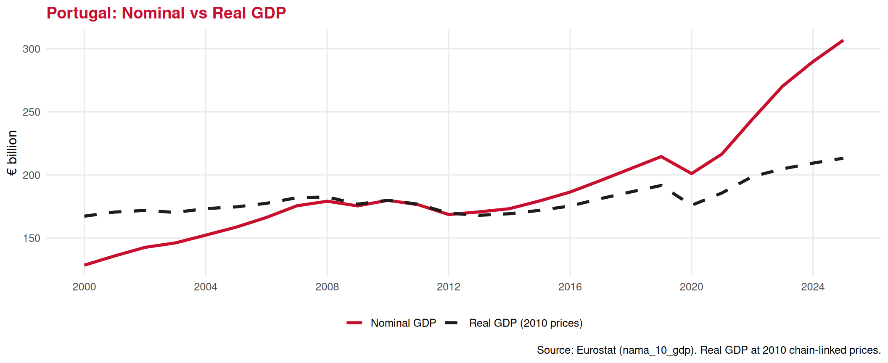
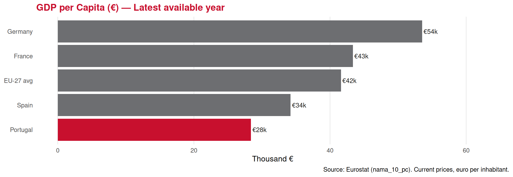

GDP is higher — even though fewer filters and plugs were made — because shoes are more valuable.
2️⃣ Final Goods and Services — No Double Counting
Final goods and services are sold to end users. Intermediate goods are used as inputs in the production of other goods and are not counted separately in GDP.
💡 The GDP deflator is broader than the CPI (covers all goods in the economy, not just a consumer basket) — we will study the CPI in the inflation lecture.
Table nama_10_gdp read from cache file: /tmp/RtmpSKKQqI/eurostat/896609113ca40bc1406626c856ac3625.rds
real_raw <-get_eurostat("nama_10_gdp",filters =list(geo ="PT", na_item ="B1GQ", unit ="CLV10_MEUR"),time_format ="num") |>filter(time >=2000) |>select(time, real = values)
Table nama_10_gdp cached at /tmp/RtmpSKKQqI/eurostat/fc566aaf1ef4d09a45de7b4b8823409d.rds
gdp_both <-inner_join(nom_raw, real_raw, by ="time") |>pivot_longer(cols =c(nominal, real),names_to ="type", values_to ="value") |>mutate(type =case_when( type =="nominal"~"Nominal GDP", type =="real"~"Real GDP (2010 prices)" ))ggplot(gdp_both, aes(x = time, y = value /1000, color = type, linetype = type)) +geom_line(linewidth =1.3) +scale_color_manual(values =c("Nominal GDP"= ue_red,"Real GDP (2010 prices)"= ue_black )) +scale_linetype_manual(values =c("Nominal GDP"="solid","Real GDP (2010 prices)"="dashed" )) +labs(title ="Portugal: Nominal vs Real GDP",x =NULL, y ="€ billion", color =NULL, linetype =NULL,caption ="Source: Eurostat (nama_10_gdp). Real GDP at 2010 chain-linked prices." ) +scale_x_continuous(breaks =seq(2000, 2024, 4)) +theme_minimal(base_size =12) +theme(plot.title =element_text(color = ue_red, face ="bold"),legend.position ="bottom",panel.grid.minor =element_blank() )

👉 The gap between the two lines = the price level rising over time. Always use real GDP for growth comparisons.
Part IV: GDP Per Capita and Its Limits
GDP Per Capita — Comparing Across Countries 🌐
A country with a larger population naturally has more GDP. To compare living standards, we use GDP per capita:
\[\text{GDP per capita} = \frac{\text{GDP}}{\text{Population}}\]
. . .
pc_raw <-get_eurostat("nama_10_pc",filters =list(geo =c("PT", "ES", "FR", "DE", "GR", "EU27_2020"),na_item ="B1GQ",unit ="CP_EUR_HAB"# Euro per inhabitant at current prices ),time_format ="num") |>filter(time ==max(time[!is.na(values)])) |>mutate(geo_label =case_when( geo =="PT"~"Portugal", geo =="ES"~"Spain", geo =="FR"~"France", geo =="DE"~"Germany", geo =="GR"~"Greece", geo =="EU27_2020"~"EU-27 avg" )) |>filter(!is.na(values))
Table nama_10_pc cached at /tmp/RtmpSKKQqI/eurostat/a7deb3545b95849d4e91b885d9098aa1.rds
ggplot(pc_raw, aes(x =reorder(geo_label, values), y = values /1000)) +geom_col(aes(fill = geo_label =="Portugal"), show.legend =FALSE) +scale_fill_manual(values =c("TRUE"= ue_red, "FALSE"= ue_gray)) +geom_text(aes(label =paste0("€", round(values /1000, 0), "k")),hjust =-0.1, size =3.5, color = ue_black) +coord_flip() +scale_y_continuous(limits =c(0, max(pc_raw$values /1000) *1.18)) +labs(title =paste0("GDP per Capita (€) — Latest available year"),x =NULL, y ="Thousand €",caption ="Source: Eurostat (nama_10_pc). Current prices, euro per inhabitant." ) +theme_minimal(base_size =12) +theme(plot.title =element_text(color = ue_red, face ="bold"),panel.grid.minor =element_blank(),panel.grid.major.y =element_blank() )

What GDP Does NOT Measure ❌
GDP is a powerful summary statistic — but it has important limitations:
❌Inequality
GDP can grow while the bottom half of society gets poorer. A country with GDP/capita €30,000 might have most people earning far less.
❌Unpaid work
Home cooking, childcare, volunteering — economically valuable, but invisible in GDP.
❌Environmental degradation
Cutting down a forest raises GDP (timber production). Rebuilding it does too. The loss of the natural asset is not recorded.
❌Quality of life
Health, safety, trust, leisure time — not captured by GDP.
❌Informal economy
Cash transactions, barter, illegal activity — all absent.
🏖️For tourism specifically:
A tourist’s satisfaction with their experience, the quality of the landscape, or the cultural authenticity of a destination — none of these show up in GDP.
👉 Hence complementary measures: Human Development Index (HDI), Genuine Progress Indicator (GPI), Tourism Satellite Accounts (TSA).
GDP and Tourism Receipts — How Big is the Sector? 📈
Table nama_10_gdp cached at /tmp/RtmpSKKQqI/eurostat/feded9a81a340c6659ff1e3a6d192960.rds
tourism_share <-inner_join(tr_bop, gdp_comp, by ="geo") |>mutate(share = receipts / gdp *100,geo_label =case_when( geo =="PT"~"Portugal", geo =="ES"~"Spain", geo =="FR"~"France", geo =="GR"~"Greece", geo =="HR"~"Croatia" ) ) |>filter(!is.na(share))ggplot(tourism_share, aes(x =reorder(geo_label, share), y = share)) +geom_col(aes(fill = geo_label =="Portugal"), show.legend =FALSE) +scale_fill_manual(values =c("TRUE"= ue_red, "FALSE"= ue_gray)) +geom_text(aes(label =paste0(round(share, 1), "%")),hjust =-0.15, size =4, color = ue_black) +coord_flip() +scale_y_continuous(limits =c(0, max(tourism_share$share) *1.2)) +labs(title ="Tourism Receipts (from non-EU) as % of GDP — 2019",subtitle ="Pre-COVID benchmark year",x =NULL, y ="% of GDP",caption ="Source: Eurostat (bop_its6_det, nama_10_gdp)" ) +theme_minimal(base_size =12) +theme(plot.title =element_text(color = ue_red, face ="bold"),plot.subtitle =element_text(color = ue_gray, size =10),panel.grid.minor =element_blank(),panel.grid.major.y =element_blank() )
Exercises
📝 Exercise 1 — Multiple Choice
In 2022, a small economy produced 100 hotel nights at €80 each and 50 restaurant meals at €20 each. In 2023, it produced 120 hotel nights at €90 each and 60 meals at €25 each. Using 2022 as the base year, what is the real GDP growth rate from 2022 to 2023?
. . .
(A) 20%
(B) 25%
(C) 32%
(D) 20% in real terms and 32% in nominal terms — they are the same
Correct answer: (A)
Real GDP 2022 = (100×80) + (50×20) = €8,000 + €1,000 = €9,000
Real GDP 2023 (at 2022 prices) = (120×80) + (60×20) = €9,600 + €1,200 = €10,800
Growth = (10,800 − 9,000) / 9,000 = 20%
Nominal GDP 2023 = (120×90) + (60×25) = €10,800 + €1,500 = €12,300 → nominal growth ≈ 36.7%. Option D is wrong: they differ precisely because prices changed.
📝 Exercise 2 — Multiple Choice
Which of the following is the most accurate statement about GDP per capita as a measure of well-being?
. . .
(A) It is a perfect measure of living standards since it adjusts GDP for the size of the population
(B) It captures inequality within the country, making it a reliable welfare indicator
(C) It is a useful but incomplete measure — it misses inequality, unpaid work, environmental quality, and leisure
(D) It includes the value of informal tourism activities such as home-sharing between friends
Correct answer: (C)
GDP per capita is a useful starting point but misses inequality (the same average can hide vast differences), unpaid work, environmental costs, and quality of life. Options A and B overstate its power. Option D is incorrect — informal/non-market transactions are excluded from GDP.
📝 Exercise 3 — Open Question
The table below shows prices and quantities for a small tourism economy (Wakanda) that produces only two goods: hotel nights and guided tours.
Year
Q Hotels
P Hotels
Q Tours
P Tours
2022
500
€100
200
€50
2023
600
€115
250
€60
(a) Calculate nominal GDP for 2022 and 2023. (2 marks)
(b) Using 2022 as the base year, calculate real GDP for 2023. (2 marks)
(c) Calculate the GDP deflator for 2023 and interpret it. (2 marks)
(d) A tourism minister claims: “Our economy grew by 38% last year.” Is this claim correct? What would be a more accurate statement? (4 marks)
(b) Real GDP 2023 = (600×100) + (250×50) = €60,000 + €12,500 = €72,500
(c) GDP Deflator 2023 = (84,000 / 72,500) × 100 = 115.9 Interpretation: the price level rose by approximately 15.9% between 2022 and 2023.
(d) The minister is citing nominal growth: (84,000 − 60,000)/60,000 = 40% (even higher — the claim is already understated). The real growth rate is (72,500 − 60,000)/60,000 = 20.8%. The correct statement is: “Our economy’s real output grew by approximately 21% — the rest of the nominal increase reflects inflation.”
Summary 📚
Today we covered:
✅ The three-part definition of GDP: market value / final goods / produced in a country
✅ The value-added approach — avoiding double counting
✅ What is and isn’t included (transfer payments, financial transactions, used goods: out)
✅ The expenditure approach: \(Y = C + I + G + NX\)
✅Nominal vs Real GDP — why we strip out inflation using base-year prices
✅ The GDP deflator as a measure of economy-wide price changes
✅GDP per capita — useful but incomplete as a welfare measure
. . .
Next lecture (Lecture 23):
🔥 Inflation in depth — the CPI, how it is measured, consequences of high inflation, and implications for tourism